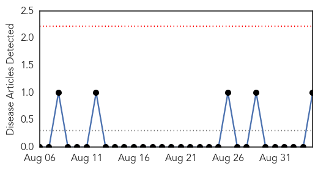
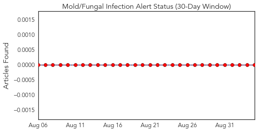
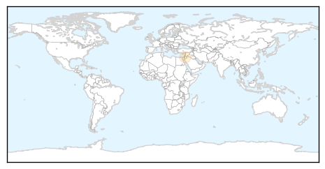
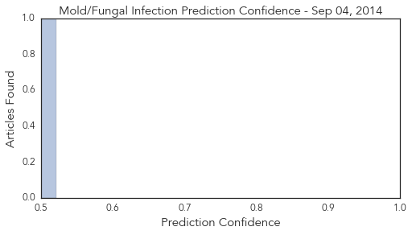

Toggle navigation
Early Warning
Daily Alerts
Mold/Fungal Infection
Sep 04, 2014
Compare to:
-
Dengue Fever
Hemmorhagic Fever
Influenza
Meningitis
Pertussis / Whooping Cough
Middle East Respiratory Syndrome
Cholera
Hepatitis
Chikungunya
Yellow Fever
Bubonic Plague
West Nile Virus
Swine Flu
Ebola
Measles
Unknown
Mumps
30 Day Trends
Web: 0
alerts
, 0
warnings
Twitter: 0
alerts
, 0
warnings
Top Articles:
0.522
Jordan halts Romanian livestock imports
Top Tweets:
No tweets found for Sep 04, 2014
Web/News Articles

Tweets

Article Locations

Article Confidences
